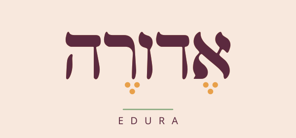
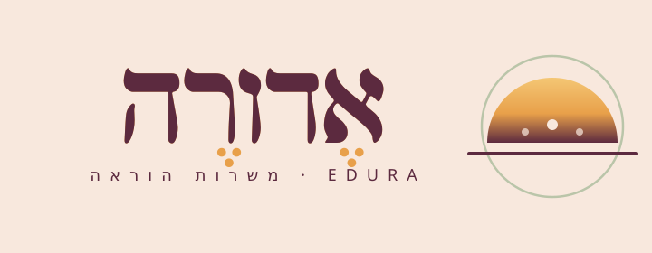
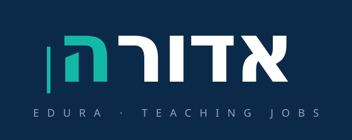
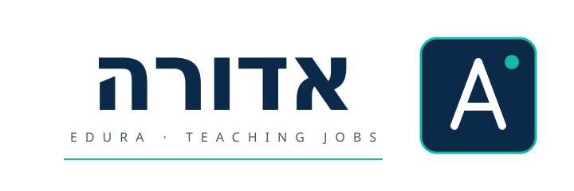
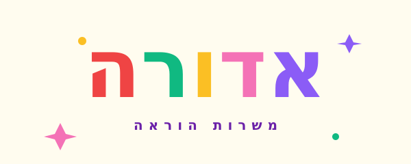
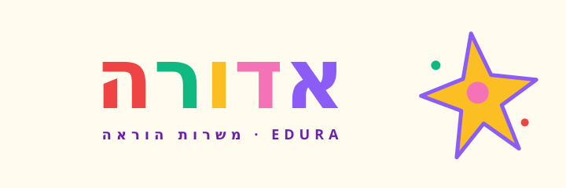

שלושה כיווני לוגו מנוגדים לבחירה. כל כיוון מגיע בשני וריאנטים — טיפוגרפי בלבד וגרסה עם סמל.






אחרי שתבחרי, ניקח את הכיוון המנצח ונפתח אותו לערכת מותג מלאה — צבעים, טיפוגרפיה, אלמנטים גרפיים, וריאציות שימוש, ויישום בדף הבית של אדורה.